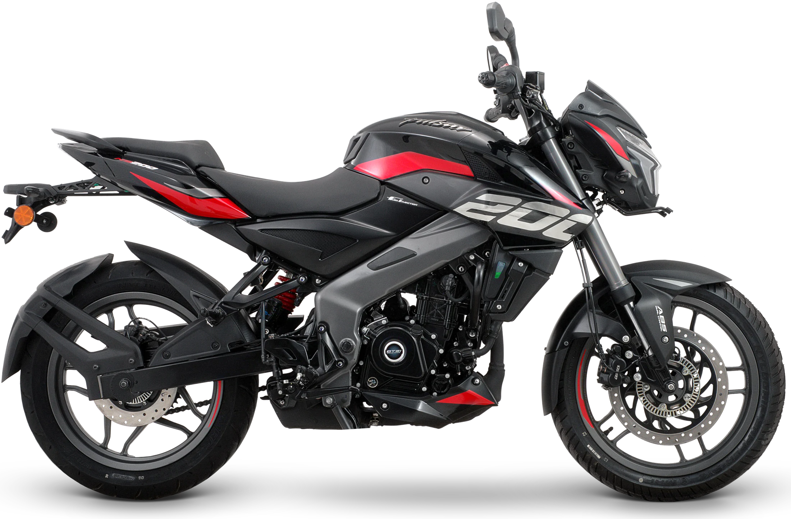

Deportiva · Pulsar
PULSAR200 NS
Desempeño deportivo y confianza para una conducción intensa.

01
Frontal
El frontal de la NS es lo primero que se reconoce en la calle: carenado corto, faro integrado y el filo rojo que recorre el lateral.
02
Depósito
Doce litros y las aletas laterales que dan a la moto su postura de ataque. La gráfica «200» va sobre la tapa, no pegada encima.
12 L de capacidad
03
Motor
199.5 cc refrigerados por líquido. El radiador y sus conductos quedan a la vista entre el chasis perimetral, que es parte del carácter de la NS.
23.2 HP · 18.3 Nm · 6 velocidades
04
Horquilla invertida
Barras invertidas al frente. Es el componente que más se nota al frenar fuerte y el que más separa a esta moto de una urbana.
05
Freno y ABS
Disco delantero perforado con pinza y el módulo ABS montado sobre la barra. Detrás, un segundo disco.
300 / 230 mm · ABS
06
Bajos y escape
El colector sale del cilindro y recorre los bajos protegido por el cubrecárter. Ahí es donde se ve el trabajo que no se suele fotografiar.
07
Cola
Asiento en dos alturas y colín levantado. La franja roja cierra el recorrido que empieza en el frontal.
¿Te la enseñamos en persona?
Está en el salón, en la Av. La Cultura. Escríbenos y te contamos disponibilidad.